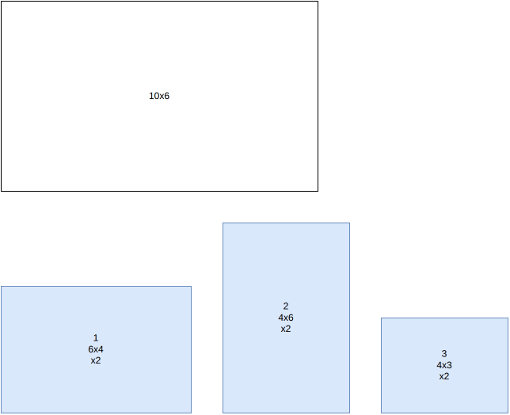

Dual feasible functions¶
Objectives¶
This algorithm computes a bound for the bin-packing, feasibility and knapsack objectives, for instances with a single bin type. It doesn’t produce solutions.
It is also used by the Benders decomposition to generate cuts.
Principle¶
The algorithm builds dominated instances, in the sense that every feasible solution of the original instance is also feasible for the dominated instances. Computing the classical area bound on these instances may lead to different values, sometimes better, which remain valid bounds for the original instance.
In the example below, the bin is 10x6 and there are two copies each of items 1 (6x4), 2 (4x6) and 3 (4x3). Every pair of these items fits together in the bin, so the naive bound based on the total item area (2x(24+24+12) = 120, divided by the bin area 60, rounded up) is only 2:


We apply the following transformation:
For every item with height \(\geq 4\), change its height to \(6\)
Remove every item with height \(\leq 2\)
Every feasible solution for the original instance is feasible for the modified instance: when the height of an item with height \(\geq 4\) is increased, every item it might intersect necessarily has height \(\leq 2\), and is therefore among the removed items.
Only item 1 is affected by the transformation: its height becomes 6. Here is the dominated instance:

Here, the naive area bound computed on the dominated instance (2x(36+24+12) = 144, divided by 60, rounded up) is 3, which turns out to be tight: the original instance does require 3 bins.
Functions¶
Such transformations are dual feasible functions. The ones used are the three families of Carlier, Clautiaux and Moukrim (2007), described on the onedimensional page: \(f_0\) (rounding the long items up to the bin and the short ones down to 0, as in the example above), \(f_1\) (counting the medium items) and \(f_2\) (rounding to multiples of the breakpoint).
A function is applied to the widths, with a breakpoint \(k\), and a function to the heights, with a breakpoint \(l\). For each pair of breakpoints and each pair of families:
bin-packingandfeasibility: the bound is the total transformed area of the items, \(\sum_i f(w_i) \, g(h_i)\), divided by the transformed area of the bin, rounded up. The best bound is kept. For thefeasibilityobjective, the instance is proven infeasible if the bound exceeds the number of bins.knapsack: the bound is the fractional (Dantzig) bound of the knapsack problem with the transformed areas. The smallest bound is kept.
When an item can be rotated, its transformed area depends on its orientation; the smallest of its two transformed areas is used, which keeps the bound valid whatever the orientation of the item in the packing.
Cuts¶
For a selection of items assigned to a bin, the same functions give inequalities on the numbers of items of each item type, valid for any selection in a bin of this type: the total transformed area of the items mustn’t exceed the transformed area of the bin. The Benders decomposition looks for the most violated one for the selections proposed by its master problem.
Automatic selection¶
The bound is computed automatically when there is a single bin type and at most 100 items. It can be forced with --use-dual-feasible-functions 1 (CLI) or use_dual_feasible_functions (Python).
Source files¶
src/rectangle/dual_feasible_functions.hpp,src/rectangle/dual_feasible_functions.cpp
References:
“New reduction procedures and lower bounds for the two-dimensional bin packing problem with fixed orientation” (Carlier, Clautiaux and Moukrim, 2007)
“A new lower bound for the non-oriented two-dimensional bin-packing problem” (Clautiaux, Jouglet and El Hayek, 2007)
“Heuristic approaches for the two- and three-dimensional knapsack packing problem” (Egeblad and Pisinger, 2009)
“A theoretical and experimental study of fast lower bounds for the two-dimensional bin packing problem” (Serairi and Haouari, 2018)